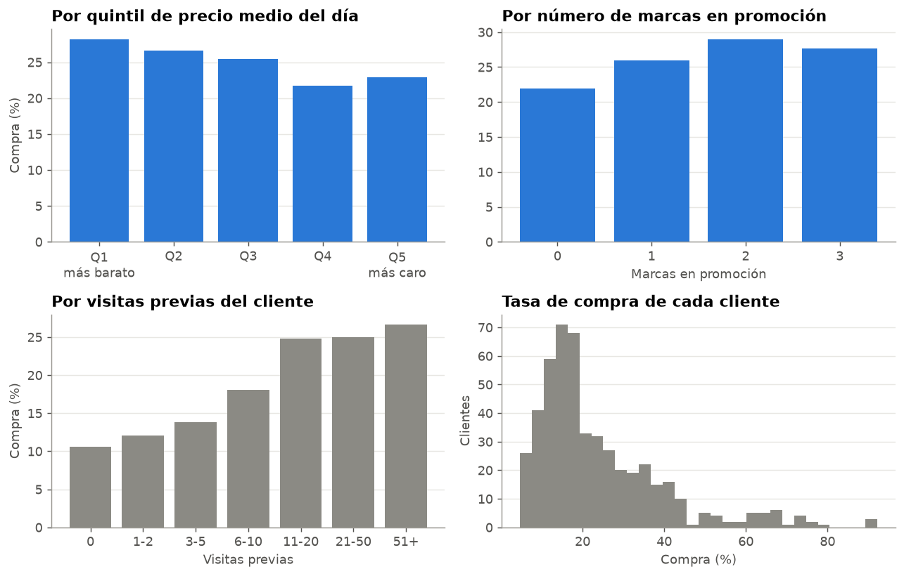
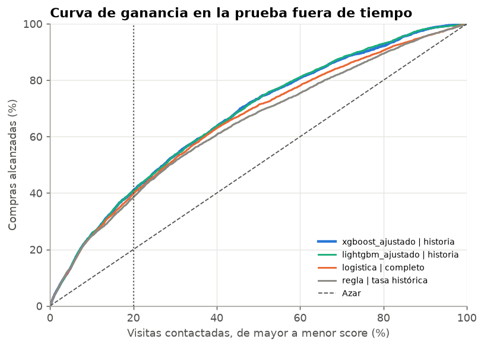
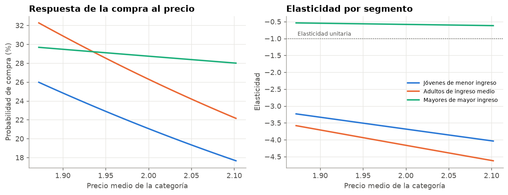

Datos: 58,693 visitas de 500 clientes durante 730 días, con precios y promociones diarias de 5 marcas.

| Pregunta | Modelo |
|---|---|
| ¿Comprará en esta visita? | XGBoost ajustado (propensión) |
| ¿Qué marca elegirá? | Logística multinomial (precios + lealtad) |
| ¿Cuánto responde al precio? | Logística de respuesta al precio por segmento |
P(compra de la marca j) = P(compra) × P(marca j | compra)
| Modelo | Variables | Gini (IC 95 %) | Compra en el 20 % |
|---|---|---|---|
| Elegido: XGBoost | 4 | 0.448 (0.41–0.49) | 51.4 % |
| LightGBM | 4 | 0.451 (0.41–0.49) | 51.3 % |
| LightGBM, 30 variables | 30 | 0.440 (0.40–0.48) | 51.1 % |
| Campeón: logística | 30 | 0.405 (0.36–0.45) | 50.0 % |
| Regla: tasa histórica | 1 | 0.371 (0.32–0.42) | 48.4 % |
| Azar | 0 | 0 | 25.2 % |


Prueba de nivel: en los últimos 6 meses el precio subió 2.8 % y la compra no cayó. La elasticidad de −3.3 mide la respuesta de corto plazo (en qué día comprar), no la de un cambio sostenido.
| Marca | Participación | Elasticidad a su precio |
|---|---|---|
| 1 (la más barata) | 9 % | −6.8 |
| 2 | 31 % | −2.4 |
| 3 | 6 % | No identificable |
| 4 | 20 % | −2.1 |
| 5 (la más cara) | 34 % | −0.5 |
| Estrategia | Compras extra | Subsidiadas | Margen |
|---|---|---|---|
| Mayor propensión | 113 | 1,473 | −272 |
| Mayor aumento de probabilidad | 166 | 1,008 | −50 |
| Mayor margen incremental | 111 | 420 | +37 |
| Al azar | 95 | 683 | −66 |
| Área | Indicador de captura de valor |
|---|---|
| Marketing y CRM | Margen incremental por oferta frente a un grupo de control |
| Pricing | Margen bruto y participación por marca |
| Inventario | Error de la demanda semanal, quiebres de stock |
| Finanzas | Retorno de la inversión en descuentos |
| Ciencia de datos | Gini, PSI del score, calibración |
Todo valor se confirma con un grupo de control aleatorio (10 % de las visitas elegibles sin oferta).
| Fase | Entregable | S1 | S2 | S3 | S4 | S5 | S6 | S7–S9 | S10–S13 |
|---|---|---|---|---|---|---|---|---|---|
| Entendimiento y calidad de datos | Diccionario corregido y reglas de calidad | ||||||||
| Análisis exploratorio y variables | Variables sin fuga y segmentación | ||||||||
| Modelos, pricing y elección de marca | Modelo elegido, ficha y elasticidades | ||||||||
| Despliegue piloto en la nube | Puntuación diaria y tablero de monitoreo | ||||||||
| Piloto con grupo de control | Margen incremental medido | ||||||||
| Prueba de precio controlada (marca 5) | Elasticidad sostenida medida |
Próximos pasos: el modelo ya está guardado y puntuar.py lo ejecuta fuera del notebook. Falta programarlo como lote nocturno en la nube (SageMaker, Azure ML o Vertex AI) y lanzar el piloto de descuentos focalizados.
Monitoreo: PSI del score mensual (> 0.25 reentrenar), sesgo de demanda semanal (> 10 % recalibrar) y margen del grupo tratado frente al control por campaña.